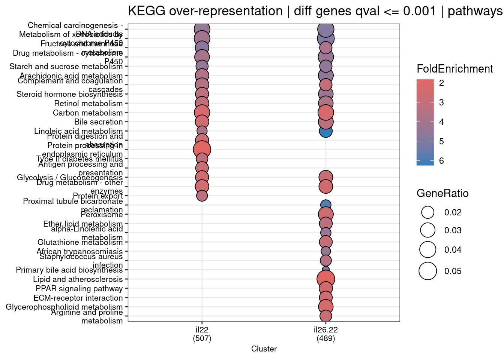

4. Biological themes classification and the enrichment analysis - continued
V Chong | vanessa.chong@rdm.ox.ac.uk | 27 November 2025
Preamble
Bulk RNAseq samples from healthy, patient-derived organoids of the terminal ileum (TI).
Libraries were prepared and sequenced in several batches.
Organoids were stimulated with IL22 only, both IL22 and IL26, or IL26 only. Controls were unstimulated.
Stimulation was performed for 24, 48, or 72 hours.
Points-of-note
24 hours samples are spread across three batches, and two different (previous and current) growth mediums. technical replicates in progress
48 hours samples constitute a batch of its own, performed in current growth medium only. technical replicates in progress
72 hours samples are not replicated and performed in a previous growth medium only - these were excluded in previous differential expression analyses.
Analysis
Previous pairwise differential expression between each IL stimulation vs control followed by Venn intersections of differential genes indicated there could be an IL26-mediated effect on IL22 stimulation. IL26 on its own did not appear to drive significant effect(s).
clusterProfiler biological themes classification and the enrichment analysis to compare effects between IL22 stimulation and IL22+IL26 co-stimulation.
Over Representation Analysis (ORA) (Boyle et al. 2004) is a widely used approach to determine whether known biological functions or processes are over-represented (= enriched) in an experimentally-derived gene list, e.g. a list of differentially expressed genes (DEGs).
A common approach to analyzing gene expression profiles is identifying differentially expressed genes that are deemed interesting. The ORA enrichment analysis is based on these differentially expressed genes. This approach will find genes where the difference is large and will fail where the difference is small, but evidenced in coordinated way in a set of related genes. Gene Set Enrichment Analysis (GSEA) (Subramanian et al. 2005) directly addresses this limitation. All genes can be used in GSEA; GSEA aggregates the per gene statistics across genes within a gene set, therefore making it possible to detect situations where all genes in a predefined set change in a small but coordinated way. This is important since it is likely that many relevant phenotypic differences are manifested by small but consistent changes in a set of genes.
Initialise R environment
##### Set libPaths #####.libPaths(c("/home/chongmorrison/R/x86_64-pc-linux-gnu-library/4.5","/home/chongmorrison/R/4.5.0-Bioc3.21")).libPaths() # check .libPaths
##### Memory/parallel cores usage #####options(Ncpus =12) # adjust no. of cores for base RgetOption("Ncpus", 1L)
[1] 12
##### Import all required packages ###### data-wrangling and plotslibrary(tidyverse)library(RColorBrewer)library(viridis)library(ggpubr)#library(SummarizedExperiment)library(dittoSeq)# analysislibrary(sleuth)library(clusterProfiler)library(enrichplot)library(rbioapi)# to cite packageslibrary(grateful)##### Set seed for reproducibility of random sampling #####set.seed(584)
Import differential expression gene lists
To get as “clean” results as possible for downstream analyses, the same parameters were employed for all differential expression:
sleuth_lrt Likelihood Ratio test, accounting for batch and donor differences
sleuth_results with pval_aggregate = FALSE to extract transcript-level results
qval <= 0.05 filter for differentially-expressed transcripts
Warning: `aes_string()` was deprecated in ggplot2 3.0.0.
ℹ Please use tidy evaluation idioms with `aes()`.
ℹ See also `vignette("ggplot2-in-packages")` for more information.
ℹ The deprecated feature was likely used in the enrichplot package.
Please report the issue at
<https://github.com/GuangchuangYu/enrichplot/issues>.

# get data.frame of outputcompare.kegg_df <-data.frame(compare.kegg)
# save compareClusterResult object to e.g. load into ShinysaveRDS(compare.kegg, file ="./shinyapps/browseKEGG_v2/data/04_compare-kegg-ora.rds")
Compare up- and down-regulated gene lists.
Split gene lists into up- and down-regulated.
IL22 only vs control
# Add Wald test values to LRT (qval <= 0.05) results, extract only required columnsil22.ctl <-left_join(il22.ctl, il22.ctl.wt, by ="target_id", suffix =c(".lrt", ".wt"))il22.ctl.tmp <-setNames(data.frame(il22.ctl$target_id, il22.ctl$ext_gene.lrt, il22.ctl$qval.lrt, il22.ctl$b), c("target_id", "ext_gene", "qval", "b_log2FC"))# check number of unique gene symbolslength(unique(il22.ctl.tmp$ext_gene))
[1] 3054
# Split into up- and down-regulatedil22.ctl.tmp.up <- il22.ctl.tmp[il22.ctl.tmp$b_log2FC >0, ]il22.ctl.tmp.dn <- il22.ctl.tmp[il22.ctl.tmp$b_log2FC <0, ]# sanity checklength(unique(il22.ctl.tmp.up$ext_gene)) +length(unique(il22.ctl.tmp.dn$ext_gene)) # 3031 genes (some transcripts have NA b_log2FC)
[1] 3031
# Filter to top ~500 hits with `qval <= 0.001`.il22.genes.up <- dplyr::filter(il22.ctl.tmp.up, qval <=0.001)il22.genes.up <-unique(il22.genes.up$ext_gene)length(il22.genes.up)
# Convert to Entrez ID using `bitr()` utility with **clusterProfiler**.il22.genes.up <-bitr(il22.genes.up, fromType ="SYMBOL", toType ="ENTREZID", OrgDb ="org.Hs.eg.db")
'select()' returned 1:1 mapping between keys and columns
Warning in bitr(il22.genes.up, fromType = "SYMBOL", toType = "ENTREZID", :
0.23% of input gene IDs are fail to map...
Run and save ORA results for each gene list (up- vs down-regulated genes); to parse into browseKEGG later.
il22.up.kegg.ora <-enrichKEGG(gene = il22.genes.up$ENTREZID, organism ="hsa", universe = bg.genes$ENTREZID,pvalueCutoff =0.05, pAdjustMethod ="BH", qvalueCutoff =0.2)il22.up.kegg.ora_df <-data.frame(il22.up.kegg.ora@result)# save enrichResult object to e.g. load into Shiny#saveRDS(il22.up.kegg.ora, file = "./shinyapps/browseKEGG_v2/data/04_il22-up-kegg-ora.rds")
il22.dn.kegg.ora <-enrichKEGG(gene = il22.genes.dn$ENTREZID, organism ="hsa", universe = bg.genes$ENTREZID,pvalueCutoff =0.05, pAdjustMethod ="BH", qvalueCutoff =0.2)il22.dn.kegg.ora_df <-data.frame(il22.dn.kegg.ora@result)# save enrichResult object to e.g. load into Shiny#saveRDS(il22.dn.kegg.ora, file = "./shinyapps/browseKEGG_v2/data/04_il22-dn-kegg-ora.rds")
IL22+26 vs control
# Add Wald test values to LRT results, extract only required columnsil26.22.ctl <-left_join(il26.22.ctl, il26.22.ctl.wt, by ="target_id", suffix =c(".lrt", ".wt"))il26.22.ctl.tmp <-setNames(data.frame(il26.22.ctl$target_id, il26.22.ctl$ext_gene.lrt, il26.22.ctl$qval.lrt, il26.22.ctl$b), c("target_id", "ext_gene", "qval", "b_log2FC"))# check number of unique gene symbolslength(unique(il26.22.ctl.tmp$ext_gene))
[1] 2864
# Split into up- and down-regulatedil26.22.ctl.tmp.up <- il26.22.ctl.tmp[il26.22.ctl.tmp$b_log2FC >0, ]il26.22.ctl.tmp.dn <- il26.22.ctl.tmp[il26.22.ctl.tmp$b_log2FC <0, ]# sanity checklength(unique(il26.22.ctl.tmp.up$ext_gene)) +length(unique(il26.22.ctl.tmp.dn$ext_gene)) # 2854 genes (some transcripts have NA b_log2FC)
[1] 2854
# Filter to top ~500 hits with `qval <= 0.001`.il26.22.genes.up <- dplyr::filter(il26.22.ctl.tmp.up, qval <=0.001)il26.22.genes.up <-unique(il26.22.genes.up$ext_gene)length(il26.22.genes.up)
# Convert to Entrez ID using `bitr()` utility with **clusterProfiler**.il26.22.genes.up <-bitr(il26.22.genes.up, fromType ="SYMBOL", toType ="ENTREZID", OrgDb ="org.Hs.eg.db")
'select()' returned 1:1 mapping between keys and columns
Cluster KEGG_ID Description geneID
1 downregulated.IL22 hsa05204 Chemical carcinogenesis - DNA adducts UGT2A3
2 downregulated.IL22 hsa05204 Chemical carcinogenesis - DNA adducts CYP3A7
3 downregulated.IL22 hsa05204 Chemical carcinogenesis - DNA adducts GSTA2
4 downregulated.IL22 hsa05204 Chemical carcinogenesis - DNA adducts CYP3A4
5 downregulated.IL22 hsa05204 Chemical carcinogenesis - DNA adducts SULT2A1
6 downregulated.IL22 hsa05204 Chemical carcinogenesis - DNA adducts GSTA1
# save for loading into a session on JADE#write.csv(res, file = "./outputs/04_formula-kegg-ora-genes.csv", quote = FALSE, row.names = FALSE)
# add column with Boolean if present in Agne's CD fistula 5k panelCD.fis.5k <-read.csv("./spatial_Agne/CD_fis_5k_panel.csv", header =TRUE)res$CD.fis.5k <-ifelse(res$geneID %in% CD.fis.5k$ext_gene, "PRESENT", "absent")## how many genes are present in the panel?res.genes <-unique(res[res$CD.fis.5k =="PRESENT", ])length(unique(res.genes$geneID))
Further data visualisation
Heatmap of genes underlying the KEGG categories that highlight the IL26+22 effect.
# Downregulated pathways-of-interestpaths.dn <-c("Maturity onset diabetes of the young","Carbohydrate digestion and absorption","Linoleic acid metabolism","PPAR signaling pathway","Primary bile acid biosynthesis","Nitrogen metabolism","Pyruvate metabolism","Histidine metabolism","Glycerophospholipid metabolism","beta-Alanine metabolism","Glyoxylate and dicarboxylate metabolism","Glucagon signaling pathway","Pentose phosphate pathway")
# Upregulated pathways-of-interestpaths.up <-c("Protein export","Biosynthesis of nucleotide sugars","Lipid and atherosclerosis","Cytosolic DNA-sensing pathway","Legionellosis","IL-17 signaling pathway","Hematopoietic cell lineage","African trypanosomiasis","Toxoplasmosis")
# Combine log2FC values into one data.frame. Due to res.il22.ctl having more genes, will use left_join.res.log2FC.max <-left_join(res.il22.ctl.max, res.il26.22.ctl.max, by ="ext_gene", suffix =c(".IL22", ".IL26.22"))colnames(res.log2FC.max)[1] <-"geneID"head(res.log2FC.max)
Append b values to genesIDs for pathways-of-interest. Min b value per geneID for downregulated genes, max b value per geneID for upregulated genes.
res.genes.dn <-left_join(res.genes.dn, res.log2FC.min, by ="geneID")res.genes.up <-left_join(res.genes.up, res.log2FC.max, by ="geneID")
# Chain geneIDs to annotated KEGG pathways for informationres.genes.dn$geneID_KEGG <-paste(res.genes.dn$Description, res.genes.dn$geneID, sep ="_")res.genes.up$geneID_KEGG <-paste(res.genes.up$Description, res.genes.up$geneID, sep ="_")head(res.genes.dn)
Cluster KEGG_ID Description geneID
1 downregulated.IL22 hsa04950 Maturity onset diabetes of the young HNF4A
2 downregulated.IL22 hsa04950 Maturity onset diabetes of the young PKLR
3 downregulated.IL22 hsa04950 Maturity onset diabetes of the young HNF1B
4 downregulated.IL22 hsa04950 Maturity onset diabetes of the young SLC2A2
5 downregulated.IL22 hsa04973 Carbohydrate digestion and absorption MGAM
6 downregulated.IL22 hsa04973 Carbohydrate digestion and absorption SI
log2FC.IL22 log2FC.IL26.22 geneID_KEGG
1 -0.7475678 -0.8248321 Maturity onset diabetes of the young_HNF4A
2 -1.8463182 -2.0816782 Maturity onset diabetes of the young_PKLR
3 -0.6314723 -0.7626972 Maturity onset diabetes of the young_HNF1B
4 -3.7800862 -3.5537044 Maturity onset diabetes of the young_SLC2A2
5 -3.6182659 -3.5614837 Carbohydrate digestion and absorption_MGAM
6 -1.9356510 -1.5665636 Carbohydrate digestion and absorption_SI
head(res.genes.up)
Cluster KEGG_ID Description geneID log2FC.IL22 log2FC.IL26.22
1 upregulated.IL22 hsa03060 Protein export SEC11C 0.7000631 0.6542693
2 upregulated.IL22 hsa03060 Protein export HSPA5 0.6222617 0.5779871
3 upregulated.IL22 hsa03060 Protein export SEC61G 0.9248314 0.6038074
4 upregulated.IL22 hsa03060 Protein export SEC61B 0.6517593 0.4973611
5 upregulated.IL22 hsa03060 Protein export SRPRB 0.5299231 0.4750965
6 upregulated.IL22 hsa03060 Protein export SPCS2 0.6008324 0.4601683
geneID_KEGG
1 Protein export_SEC11C
2 Protein export_HSPA5
3 Protein export_SEC61G
4 Protein export_SEC61B
5 Protein export_SRPRB
6 Protein export_SPCS2
# Remove NA valuesres.genes.dn <-na.omit(res.genes.dn)res.genes.up <-na.omit(res.genes.up)
Plot heatmap - downregulated genes.
# Set rownames as factor to conserve the order consistent with KEGG dotplot aboveres.genes.dn$geneID_KEGG <-factor(res.genes.dn$geneID_KEGG, ordered=TRUE, levels =rev(c(res.genes.dn$geneID_KEGG)))# Pivot longer for ggplotres.genes.dn.tmp <- res.genes.dn[, c("geneID_KEGG", "log2FC.IL22", "log2FC.IL26.22")]res.genes.dn.tmp <- res.genes.dn.tmp %>%pivot_longer(cols =c("log2FC.IL22", "log2FC.IL26.22"),names_to ="stim", values_to ="log2FC")
# Set rownames as factor to conserve the order consistent with KEGG dotplot aboveres.genes.up$geneID_KEGG <-factor(res.genes.up$geneID_KEGG, ordered=TRUE, levels =rev(c(res.genes.up$geneID_KEGG)))# Pivot longer for ggplotres.genes.up.tmp <- res.genes.up[, c("geneID_KEGG", "log2FC.IL22", "log2FC.IL26.22")]res.genes.up.tmp <- res.genes.up.tmp %>%pivot_longer(cols =c("log2FC.IL22", "log2FC.IL26.22"),names_to ="stim", values_to ="log2FC")
# DON'T set rownames as factor to conserve the order consistent with KEGG dotplot above - throws error during quarto_render()#res.genes.up$geneID_KEGG <- factor(res.genes.up$geneID_KEGG, ordered=TRUE, levels = rev(c(res.genes.up$geneID_KEGG)))# Pivot longer for ggplotres.genes.up.tmp <- res.genes.up[, c("geneID_KEGG", "log2FC.IL22", "log2FC.IL26.22")]res.genes.up.tmp <- res.genes.up.tmp %>%pivot_longer(cols =c("log2FC.IL22", "log2FC.IL26.22"),names_to ="stim", values_to ="log2FC")
A large number of files (1479 in total) have been discovered.
It may take renv a long time to scan these files for dependencies.
Consider using .renvignore to ignore irrelevant files.
See `?renv::dependencies` for more information.
Set `options(renv.config.dependencies.limit = Inf)` to disable this warning.